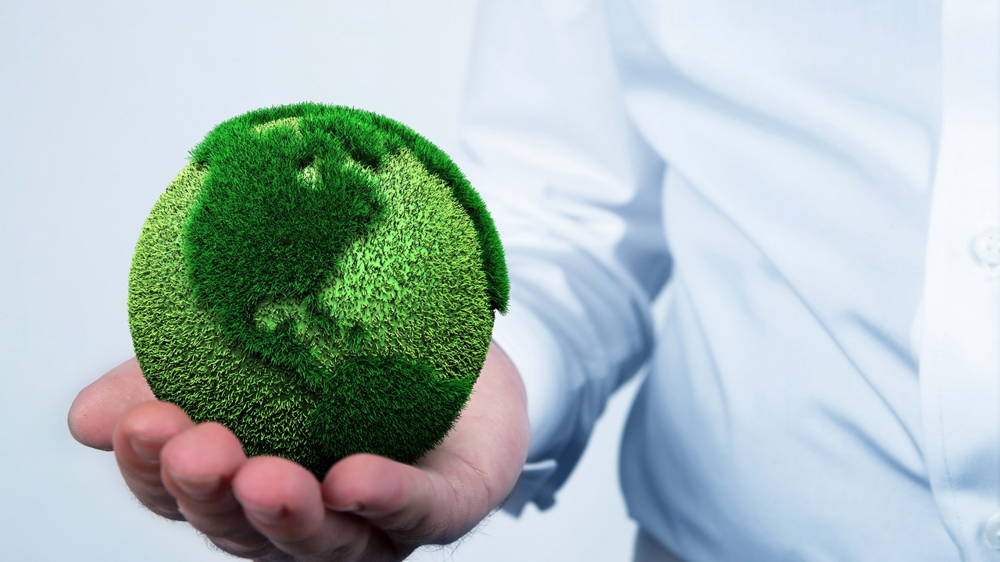
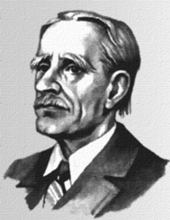
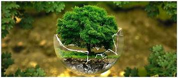
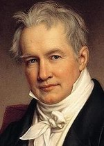
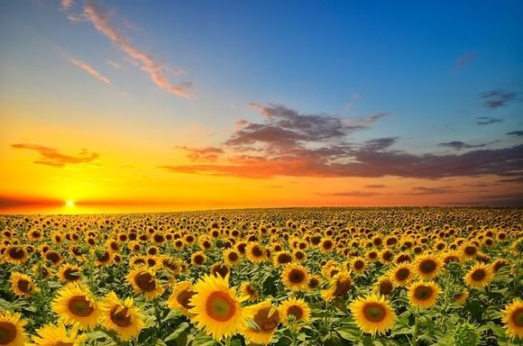
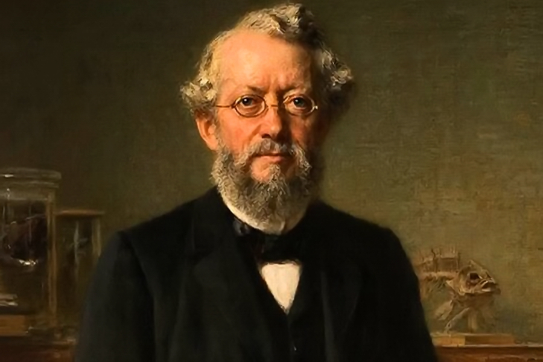

Етика відносин "людина-природа" в традиційному суспільстві

Збільшення кількості населення призвело до розширення посівних площ і зростанням поголів'я домашньої худоби. Людина стала боротися з тими явищами природи, які заважали його життєдіяльності. Він вирубував ліси, знищував сорняковие рослини, винищував хижих тварин, небезпечних для худоби.
Вбивство деяких видів тварин іноді викликалося не об'єктивною необхідністю, а бажанням людей, в першу чергу вождів, королів і т.д., показати свою силу і спритність в сутичці один на один зі страшним звіром. Так були знищені тури - величезні бики, які жили на території сучасних Литви, Білорусії, Польщі.

Термін «екосистема» ввів в обіг англійський еколог Артур Тенслі в 1935 році, а сучасне визначення йому надав Реймонд Ліндман в 1942 році в своїй класичній роботі по вивченню біології озера Міннесота.Ось яке визначення цьому терміну дає М. Ф. Реймерс
Артур Тенслі
Етика відносин "людина-природа" в індустріальному суспільстві

XX ст. став не тільки часом апогею впливу людини на природу. Людство стали замислюватися про те, як запобігти згубні наслідки науково-технічного розвитку. Особливо важливим стали будівництво та вдосконалення очисних споруд при заводах і фабриках, створення безвідходних і енергозберігаючих технологій, будівництво підприємств з переробки побутових відходів.
Конструкторами різних країн вже створені дослідні моделі екологічно чистих автомобілів, що працюють на електриці і сонячної енергії. Але масове виробництво їх поки не почалося через передбачуваної великий ціни на них

Александер фон Гумбольдт (нім. Friedrich Wilhelm Heinrich Alexander von Humboldt, 14 вересня 1769, Берлін — 6 травня 1859, Берлін) — німецький вчений-енциклопедист, фізик, метеоролог, географ, ботанік, зоолог, мандрівник, молодший брат вченого Вільгельма фон Гумбольдта. Основоположник географії рослин.
Наукові інтереси Гумбольдта були надзвичайно різноманітними. Своїм основним завданням він вважав «збагнення природи як цілого й збір свідчень про взаємодію природних сил».
Етика відносин "людина-природа" в інформаційному суспільстві

З розвитком науково-технічного прогресу вплив суспільства на природу все більш посилюється. Особливо показовим у цьому плані XX століття. Саме в цей час з'явилися технології масового виробництва, людина навчилася використовувати атомну енергію і почав підкорення космосу. І саме в цей час з'явилися нові, більш потужні джерела забруднення природи, причому кожен з нас, сам того не знаючи, бере участь в цьому процесі. Зараз практично у кожної сім'ї є автомобіль. Ми добре засвоїли відому думку про те, що автомобіль не розкіш, а засіб пересування.

Карл Август Мебіус нім . Karl A.Mobius - (7 лютого 1825, Айленбург - 26 квітень 1908, Берлін) німецький зоолог , один з родоначальників екології , перший директор Музею Природознавства (нім. Museum fur Naturkunde ) в Берліні.
Мебіус народився в Айленбург ( Саксонія). У чотири роки він вступив до початкової школи Айленбург , а у віці 12 років батько відправив його вчитися на викладача .